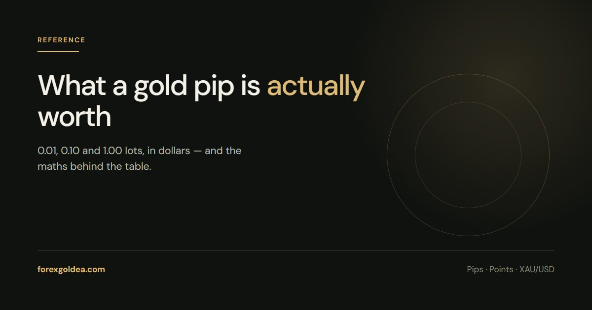

XAUUSD Pip Value: 0.01, 0.1 and 1 Lot in Dollars

One pip of gold is a $0.10 move in the price. What that pays depends entirely on how many ounces you control — and a standard lot is 100 of them.
The table
On the usual XAUUSD contract — 100 ounces per standard lot, a pip being a $0.10 move:
| Lot size | Ounces | 1 pip ($0.10 move) | 1 point ($0.01) | $1.00 move |
|---|---|---|---|---|
| 0.01 | 1 | $0.10 | $0.01 | $1 |
| 0.05 | 5 | $0.50 | $0.05 | $5 |
| 0.10 | 10 | $1.00 | $0.10 | $10 |
| 0.50 | 50 | $5.00 | $0.50 | $50 |
| 1.00 | 100 | $10.00 | $1.00 | $100 |
Everything else scales linearly. Two lots is double the one-lot column; 0.02 is double the 0.01 row.
The arithmetic, so you can do it anywhere
Lot size × 100 gives you ounces. Ounces × the price move gives you money.
Profit or loss = lot size × 100 × price move in $
A 0.03 lot position through a $2.50 move: 0.03 × 100 × 2.50 = $7.50. It does not matter whether you call that move 25 pips or 250 points — convert to dollars of price first and the ambiguity disappears.
Why "0.01 pips in gold" is usually the wrong question
It is a common search, and it mixes two units. 0.01 is not a pip on gold — it is a point, the last decimal of the quote. One pip is ten of them.
So "what is 0.01 in gold worth" has the answer one cent per ounce: $0.01 at 0.01 lots, $1.00 at a full lot. If you meant a pip, multiply by ten.
Where the number changes
- Three-decimal feeds. Some brokers quote gold to three decimals. The pip is still $0.10; there is simply an extra digit of precision, and MetaTrader's point becomes $0.001.
- Non-standard contracts. A handful of brokers use a 10-ounce or 1-ounce gold contract, especially on cent accounts. Pip value falls by the same factor.
- Account currency. The table is in USD. A euro-denominated account converts at the prevailing rate, so pip value drifts with EUR/USD.
All three are listed in the contract specification in your platform — right-click XAUUSD in Market Watch and open Specification.
What the number is actually for
Pip value is not trivia; it is the bridge between a chart idea and a risk decision. A stop that sits $3.40 away is meaningless until it becomes "this costs $17 at my size".
Work in this order: measure the stop on the chart in dollars of price, decide what you are willing to lose, then let the two produce the lot size. Our stop loss sizing guide walks through that calculation, and the pip calculator does the conversion for any size.
Reader questions
How much is 1 pip in gold?
A pip on XAUUSD is a $0.10 move in the price. In money it is $10 per standard lot, $1 per 0.10 lot and $0.10 per 0.01 lot, because a standard lot is 100 ounces.
What is 0.01 lot of gold worth per pip?
0.01 lots is one ounce, so a pip pays $0.10 and a full $1.00 move pays $1. It is the smallest size most brokers accept and the usual starting point for a small account.
Is 0.01 a pip or a point on gold?
A point. On a two-decimal gold quote, 0.01 is the last decimal, and ten of them make one pip. Platforms count stops and targets in points, which is why the numbers look ten times larger than traders expect.
How do I calculate profit on a gold trade?
Multiply lot size by 100 to get ounces, then by the price move. 0.20 lots through a $3 move is 0.20 × 100 × 3 = $60, before spread and any swap.
Why is gold pip value different from forex pairs?
On most forex pairs a pip is the fourth decimal of the quote. Gold trades in four figures and is quoted in cents, so a fourth-decimal pip would be meaningless. Brokers define the gold pip as $0.10 instead.
Where this leaves you
Two numbers carry all of it: a lot is 100 ounces, and a pip is ten cents of price. Everything else is multiplication. Once pip value is instinctive, a stop distance stops being an abstract chart measurement and becomes a figure you can accept or refuse.
Affiliate disclosure: we earn a commission when you open and fund an account through our partner links, at no extra cost to you.